Videojuegos · Inteligencia Artificial · Innovación Tecnológica
Ser parte de Colombia 5.0 fue algo que me sorprendió bastante. Sabía que era un evento grande de tecnología, pero no me esperaba que las conferencias fueran tan prácticas y directas. Hablar con personas de la industria real del desarrollo de videojuegos fue diferente a lo que uno aprende solo en clase.
Este sitio recoge lo que aprendí en dos conferencias: Game UI Systems: de pantallas bonitas a interfaces que funcionan, que me asignó el profe, y Automatización de IA para Videojuegos, que elegí yo porque la IA en videojuegos me parece que lo va a cambiar todo.
¿Para qué este sitio? Es un proyecto del SENA donde aplicamos HTML, CSS y JavaScript para presentar lo del evento en español e inglés.
Acá está lo que entendí y anoté de cada charla. Traté de escribirlo con mis propias palabras, no copiar y pegar de ningún lado.
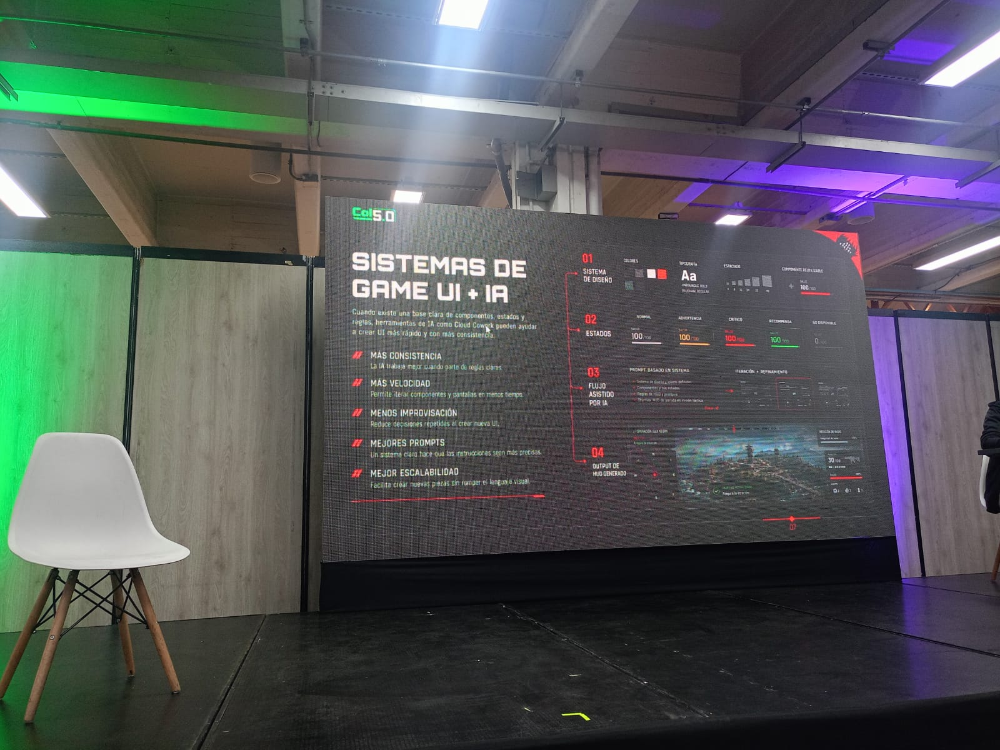
ómo diseñar interfaces que no solo se vean bien sino que realmente le sirvan al jugador, sin que tenga que pensar mucho para usarlas.
Lo que más me llamó la atención del taller de Andrés Pisso es que empezó con una idea que sonó sencilla pero me quedó dando vueltas: una interfaz bonita que confunde al jugador es un fracaso. Ahí entendí que el diseño UI no es solo poner colores y botones bien acomodados.
Nos explicó cómo funciona la jerarquía visual, que es básicamente guiar el ojo del jugador hacia lo más importante sin que se dé cuenta. También vimos cómo Figma ayuda a armar sistemas de diseño con componentes reutilizables, algo que en producción real ahorra un montón de tiempo. Lo de accesibilidad fue nuevo para mí: hay normas de contraste mínimo y tamaños de botones para que personas con discapacidad visual también puedan jugar sin problemas. Me fui del taller con ganas de revisar todos mis proyectos y ver cuántos errores de UI tenía sin saberlo.
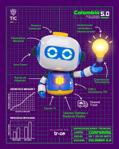
Cómo los estudios de videojuegos están usando IA no para reemplazar devs sino para quitarles el trabajo aburrido y dejarles tiempo para lo creativo.
Esta fue la conferencia que yo elegí y no me arrepiento para nada. Alejandro González, CEO de Bacon Games, habló sin rodeos de cómo están usando IA en su estudio. No fue una charla de "la IA va a salvarnos a todos", fue más honesta que eso.
Lo que más me impactó fue ver ejemplos reales: usan un agente de IA que juega el juego miles de veces y detecta bugs que un humano tardaría semanas en encontrar, generan texturas de prueba para que los artistas iteren más rápido, y ajustan la dificultad en tiempo real según cómo juega cada persona. Pero también fue claro en algo: la parte artística y las decisiones de diseño siguen siendo 100% humanas. La IA no sabe qué hace que un juego sea divertido. Eso todavía lo sabemos nosotros.
Here is the English version of what I learned at the event. I translated it myself so it might not be perfect, but it is as accurate as I could make it.
How game studios are using AI to handle repetitive work so developers can spend their time on the creative parts that actually matter.
This was the Conferences I picked myself and I think it was the best choice.Alejandro González, CEO of Bacon Games,was direct about how AI is being used day to day in his studio.
The most impressive part was seeing real examples: an AI agent playing the game thousands of times to catch bugs that would take a human tester weeks to find, tools that generate draft textures so artists can iterate faster, and systems that adjust difficulty based on how each player performs.
Algunas fotos que tomé y recopilé durante el evento. El ambiente era bastante bueno la verdad.
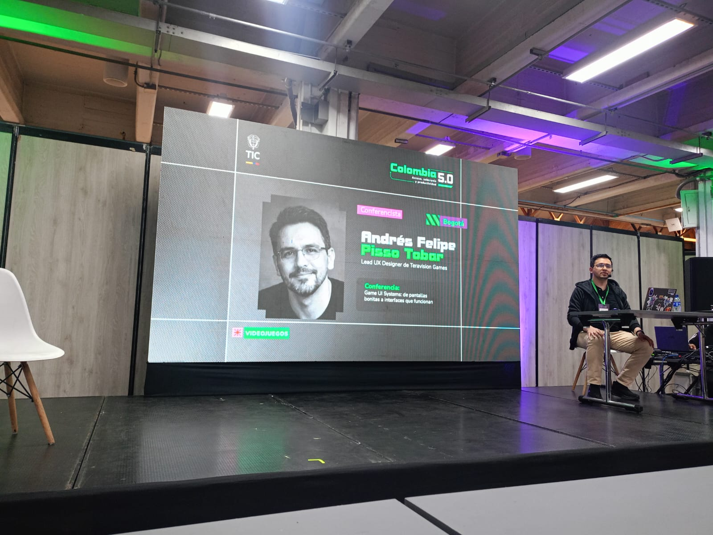
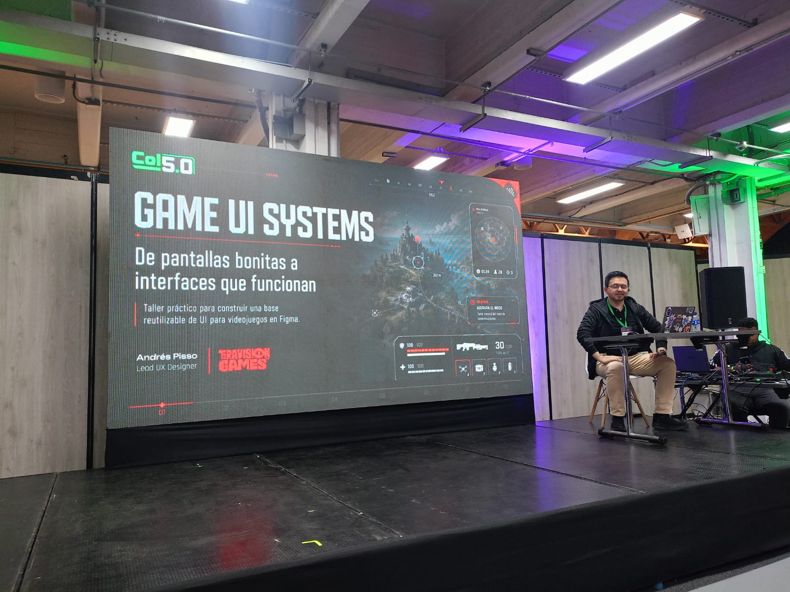
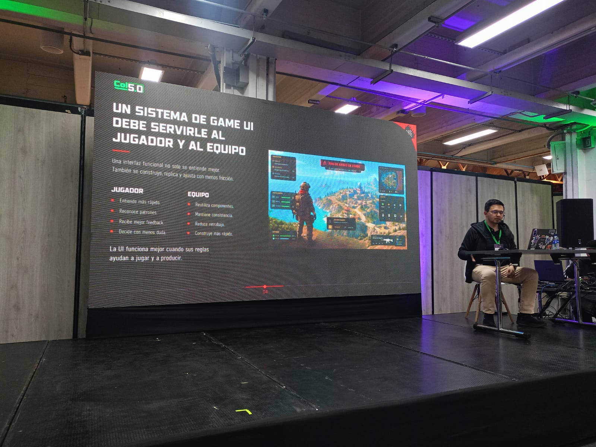
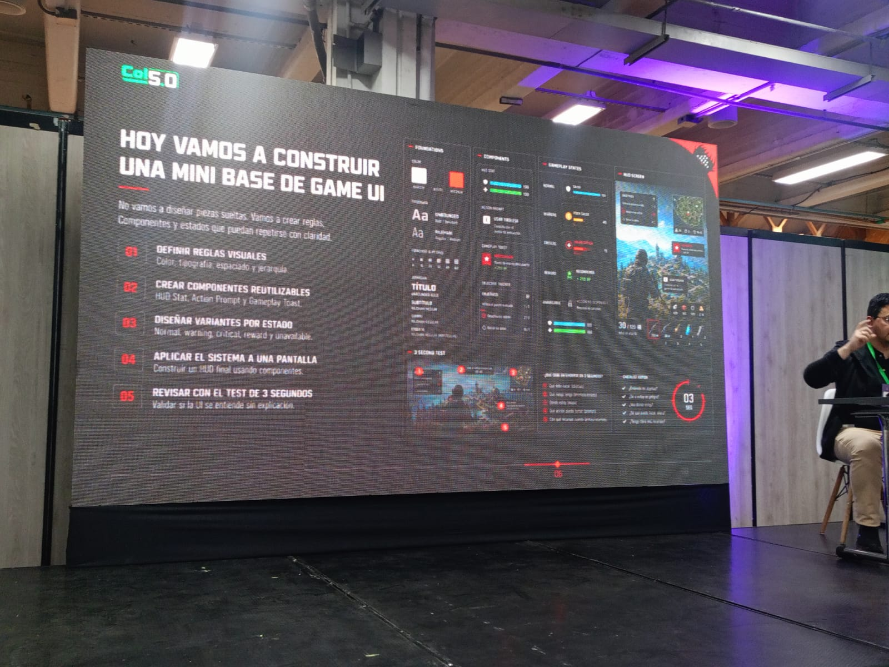
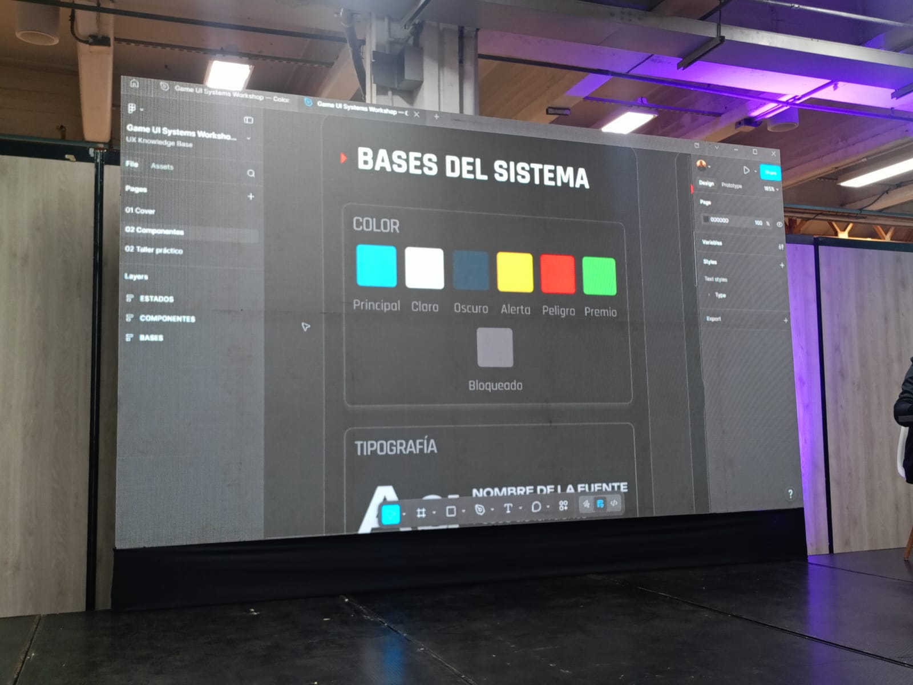
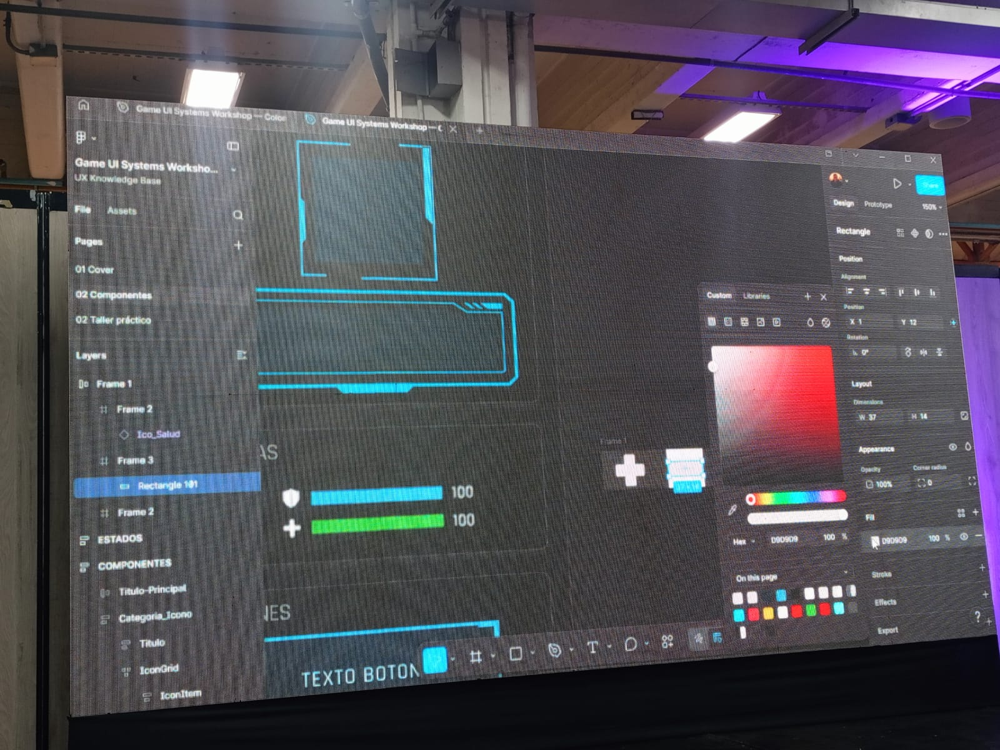
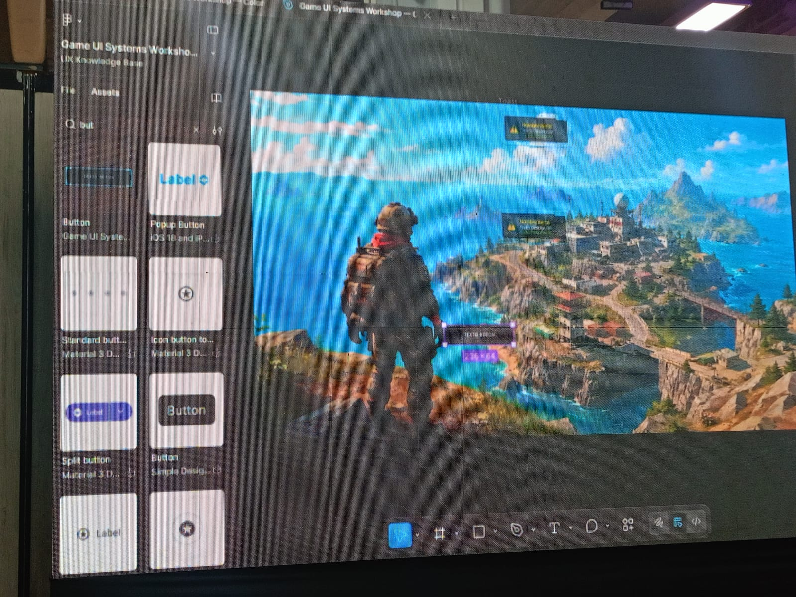
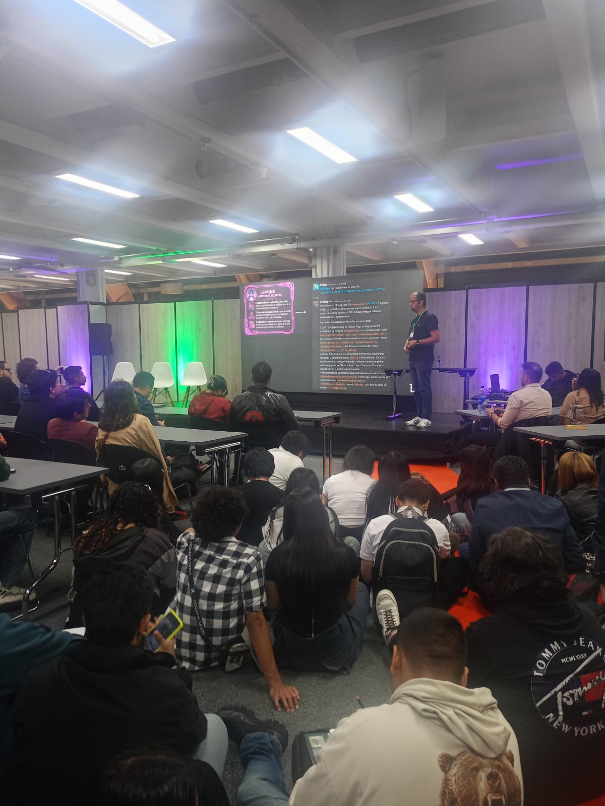
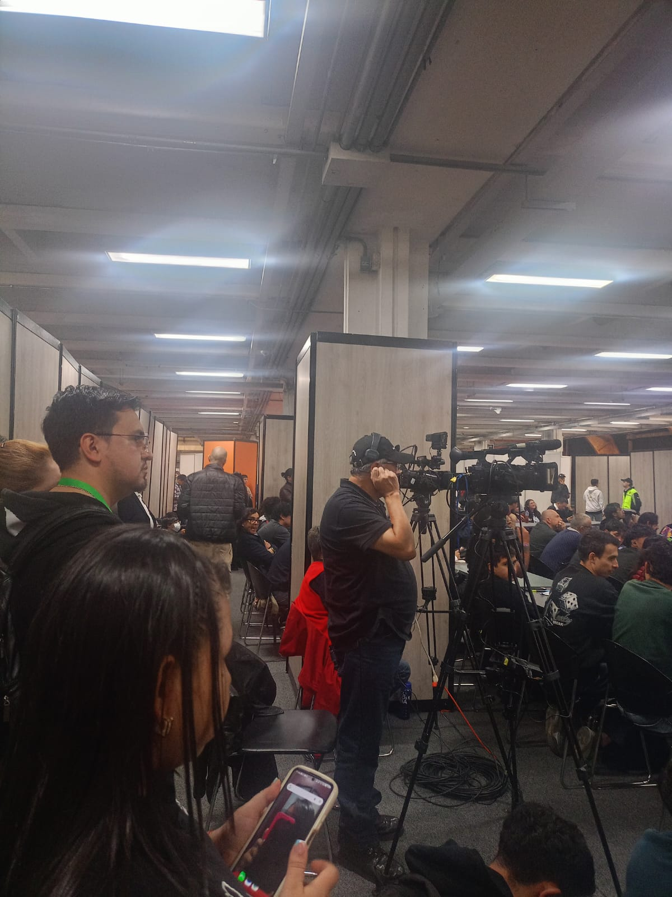
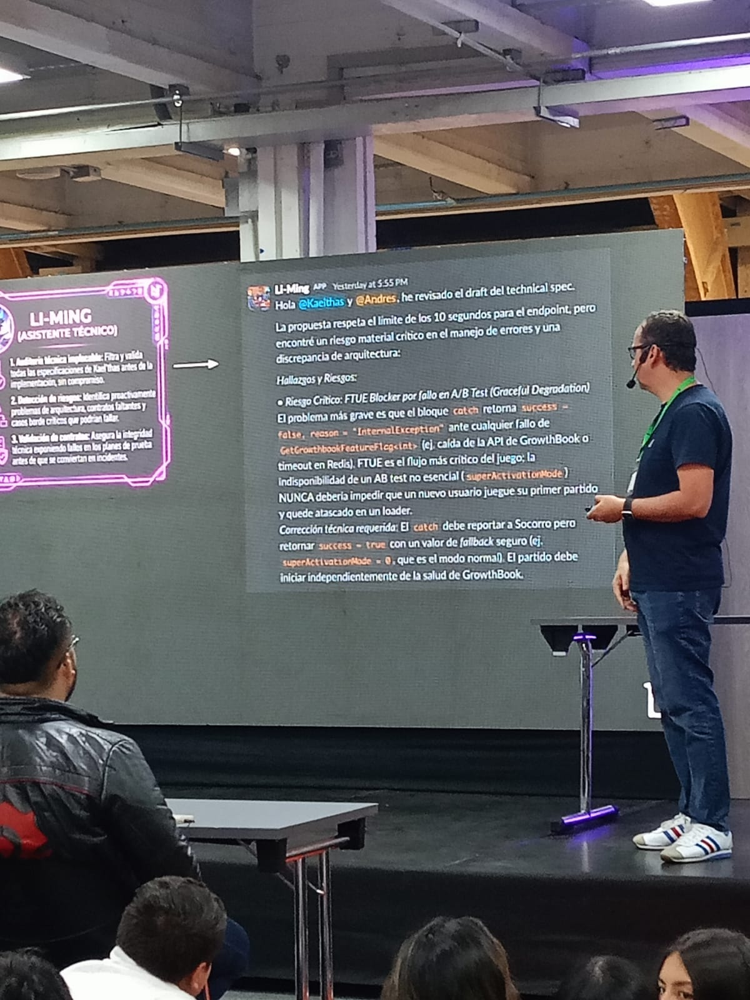
These are 30 words that kept coming up during the conferences. I looked up the ones I did not know and wrote the definitions as clearly as I could.
| English | Español | Definition |
|---|---|---|
| Artificial Intelligence | Inteligencia Artificial | Technology that simulates human cognitive functions like learning and problem solving. |
| User Interface (UI) | Interfaz de Usuario | Visual environment through which users interact with a system or application. |
| User Experience (UX) | Experiencia de Usuario | Overall feeling a user has while interacting with a product or service. |
| Automation | Automatización | Execution of tasks with minimal or no human intervention using technology. |
| Game Engine | Motor de Juego | Software framework used to build video games, for example Unity or Unreal Engine. |
| Machine Learning | Aprendizaje Automático | Branch of AI where systems learn patterns from data without being explicitly programmed. |
| Cloud Computing | Computación en la Nube | Delivery of computing services like servers and storage over the internet. |
| big Data | Grandes Datos | Very large datasets that require specialized tools to process and analyze. |
| Cybersecurity | Ciberseguridad | Technologies and practices that protect digital systems and data from attacks. |
| Algorithm | Algoritmo | Set of step-by-step instructions designed to solve a specific problem. |
| Design System | Sistema de Diseño | Collection of reusable components and rules for building consistent interfaces. |
| Visual Hierarchy | Jerarquía Visual | Arrangement of elements that guides the viewer's attention by order of importance. |
| Prototype | Prototipo | Early model of a product used to test ideas before full development begins. |
| Generative AI | IA Generativa | AI systems that create new content such as images, text, audio or 3D models. |
| Neural Network | Red Neuronal | Computing system inspired by the brain used to recognize patterns and make decisions. |
| Pipeline | Flujo de Producción | Sequence of steps that move data or assets through a production workflow. |
| Responsive Design | Diseño Adaptable | Design approach that makes interfaces work on different screen sizes. |
| Accessibility | Accesibilidad | Practice of designing products usable by people with different abilities or disabilities. |
| QA (Quality Assurance) | Garantía de Calidad | Process of testing software to find bugs and confirm it meets quality standards. |
| Procedural Generation | Generación Procedural | Using algorithms to automatically create game content like levels or maps. |
| API | Interfaz de Programación | Set of rules that lets different software applications communicate with each other. |
| Framework | Marco de Trabajo | Pre-built software structure that gives developers a starting point for their applications. |
| Wireframe | Esquema de Interfaz | Basic sketch of a UI layout showing where elements go before any styling is added. |
| Agile | Metodología Ágil | Development approach based on short work cycles, collaboration and constant feedback. |
| Deployment | Despliegue | Process of releasing a finished application to a live production environment. |
| Blockchain | Cadena de Bloques | Decentralized system for recording transactions in a transparent and tamper-proof way. |
| Data Mining | Minería de Datos | Process of finding useful patterns and insights inside large datasets. |
| Deep Learning | Aprendizaje Profundo | Type of machine learning using multiple layers of neural networks to process complex data. |
| Natural Language Processing | Procesamiento de Lenguaje Natural | Area of AI focused on making computers understand and generate human language. |
| Version Control | Control de Versiones | System for tracking code changes over time, for example using Git and GitHub. |
Esta es mi opinión sobre lo que aprendí en Colombia 5.0, especialmente sobre el uso responsable de la IA y la tecnología en el mundo empresarial.
div class="cita-principal">Antes de ir a Colombia 5.0 nunca había pensado mucho en la ética dentro de la tecnología. Para mí era algo más de filósofos que de programadores. Pero escuchar a personas que ya trabajan en la industria hablar de estos temas de forma tan directa me hizo ver que es algo que nos va a tocar enfrentar a todos los que nos metemos en este campo, queramos o no. La IA y la automatización son herramientas increíbles, eso quedó claro, pero también pueden usarse muy mal si no hay criterio detrás de quien las construye.
Algo que me quedó claro es que la IA aprende de datos, y esos datos los producen personas que ya tienen sesgos. Si entrenamos un sistema con información sesgada, el sistema va a ser sesgado también, aunque nadie se lo haya pedido. Como desarrolladores tenemos que ser conscientes de eso. No es fácil, pero ignorarlo tampoco es una opción.
Cada vez que usamos una app damos datos sin darnos cuenta. Lo que aprendí es que los desarrolladores tienen la responsabilidad de proteger esa información desde el inicio del proyecto, no después cuando ya algo salió mal. Escuché el término "Privacy by Design" y me pareció clave: la privacidad tiene que estar en el código desde el primer día, no como un parche al final.
Uno de los miedos que más escuché fue el de la automatización quitando empleos. El punto fue que si la tecnología se usa bien, lo que hace es quitarle a la gente las tareas más repetitivas. El problema no es la automatización en sí, sino cómo se implementa y quién se beneficia de ella.
Lo que más me llevé de Colombia 5.0 es que ser buen programador no es solo saber escribir código que funciona. También es entender para qué se va a usar ese código y quién puede verse afectado. No todo lo que se puede construir se debe construir. Eso es algo que antes no me preguntaba y ahora sí.
This is my personal take on what Colombia 5.0 taught me about using technology in a responsible way, especially when it comes to AI.
Honestly, before Colombia 5.0 I had never really thought about ethics as something that applied to me as a developer. It felt like a topic for philosophy class, not for someone learning to code. But hearing people who actually work in tech talk about it so naturally made me realize it is going to be part of my job whether I am ready for it or not. AI and automation are impressive tools, that much is obvious, but they can also cause real harm if the people building them are not paying attention.
One thing that hit me at the event is that AI learns from data, and data comes from people who already have biases. If you train a system on biased information, the system will be biased too, even if nobody asked for that. As developers we have to be aware of this. It is not a simple problem to solve, but pretending it does not exist is worse.
Every time we use an app we give away data without really thinking about it. What I learned is that developers are responsible for protecting that information from day one, not after something already went wrong. I heard the term "Privacy by Design" and it made sense: privacy should be in the code from the start, not added later as a fix.
The fear of automation taking jobs came up more than once. The point was that if technology is applied well it removes the boring repetitive work and gives people space for more creative tasks. The problem is not automation itself, it is who controls it and who actually benefits from it.
The biggest thing I am taking away from Colombia 5.0 is that being a good developer is not just about writing code that works. It is also about understanding what that code is going to be used for and who might be affected. Not everything that can be built should be built. That is a question I had never really asked myself before, and now I do.
Gracias por tomarte el tiempo de leer este proyecto. Fue mi primera vez en Colombia 5.0 y me llevé mucho más de lo que esperaba. Espero que algo de lo que escribí acá te sirva o te haga pensar tanto como me hizo pensar a mí.